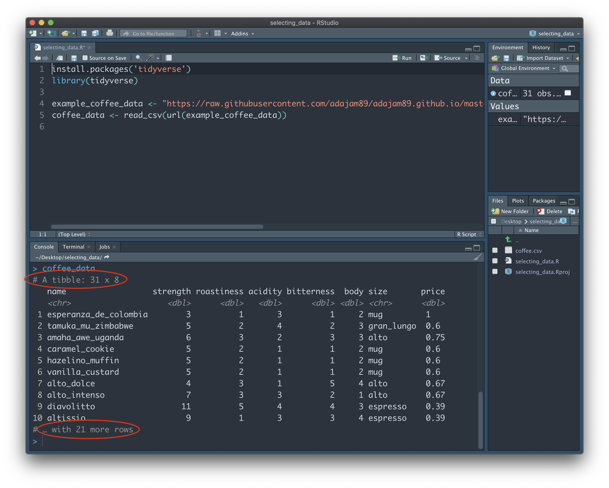
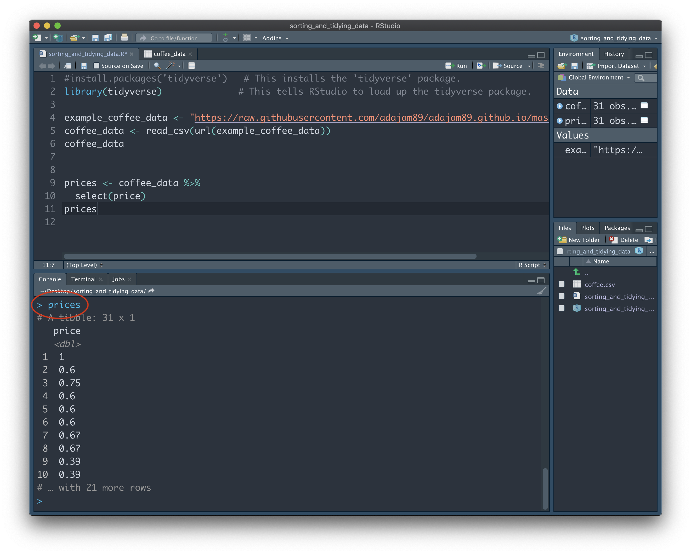
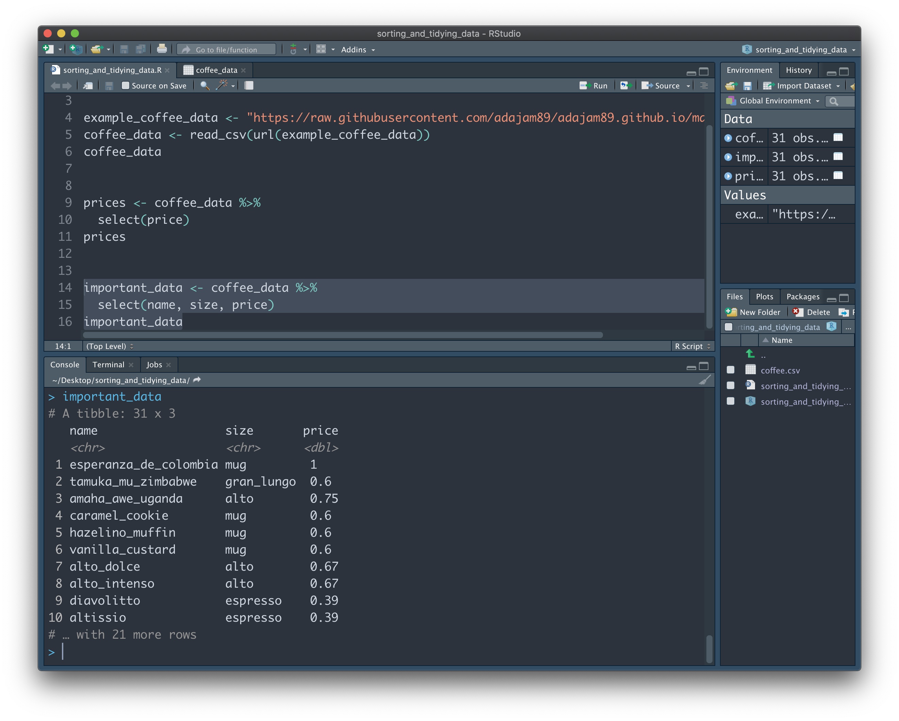
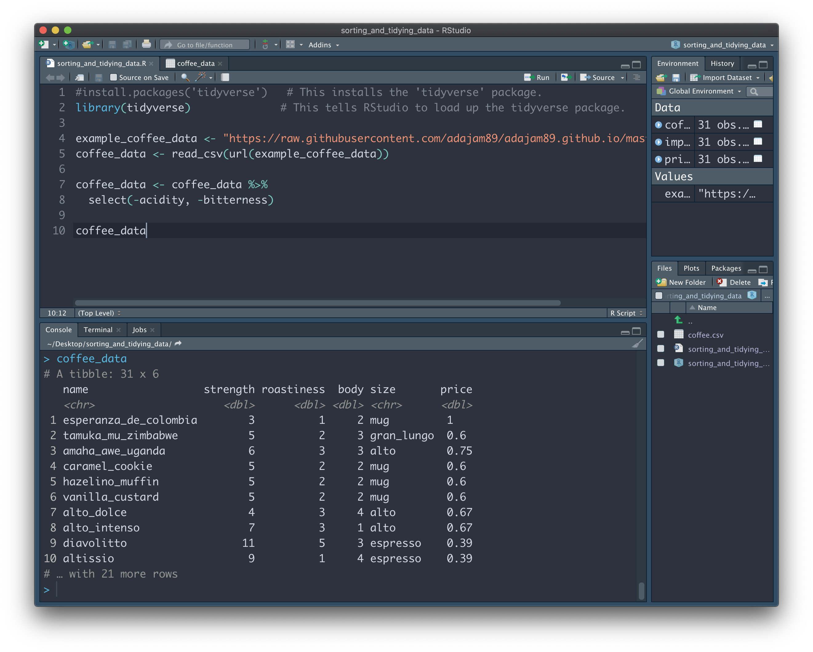

Selecting data.

There are a number of simple, yet very powerful tools available in R when it comes to wrangling your data. Here we'll demonstrate just how easy it is to select, delete, group, and more. Before we begin, you'll first need to have some data in RStudio. If you're following on from the previous guide (Importing data: the basics), you're already good to go! Just make sure you have the Project file you created last time open, along with the R script.
If you're jumping in fresh with this guide, simply copy and paste the code below into the Source window. Highlight everything, and then press "Run". This will bring you up to speed, and get some example data imported into RStudio for you:
install.packages('tidyverse') # This installs the 'tidyverse' package.
library(tidyverse) # This tells RStudio to load up the tidyverse package.
example_coffee_data <- "https://raw.githubusercontent.com/adajam89/adajam89.github.io/master/coffee.csv" # This is the location of some example data of mine that is stored online.
coffee_data <- read_csv(url(example_coffee_data)) # Import the data.
First, let's have a little look at the data to see what we're dealing with. To do this, we can type the name of the variable containing the data - "coffee_data" - into the Console, and press Enter:

We can see that the dataset isn't too big. The note at the top: "# A tibble: 31 x 8", tells us that our data has 31 rows, and 8 columns. A 'tibble' is the type of structure that contains our data. If you look just below row 10 of the output, you should see the notice "# … with 21 more rows". This tells us that the entire dataset is not being shown to us here. Instead, RStudio is just giving us a glimpse of the first 10 rows, so as not to clutter the Console. You may be wondering why it doesn't just show us the whole thing...Imagine our data is much longer (e.g. 10,000 rows) - if the Console were to show us the entire dataset each time we typed its' name, it would soon become very annoying to scroll up and down through the Console!

To save us having to manually type it into the Console again and again, we can simply add the variable name on its' own line to the end of our script. Now, whenever we run our script, it will automatically show us the final state of the data. Your script and window should look similar to this:
Note: If you're using your own data here, it's important to check that it is formatted in the correct way. Specifically, you want each row to represent a unique 'case'. In other words, each participant should get their own row. In our example data, we could think of the different coffee names as individual participants. They each have their own row, and each have their own data toward a number of shared variables, such as 'strength', 'bitterness', and 'price'.
If you want to see the full data, look to your Environment panel (in my screenshot, it's located in the top right) and under "Data", click the "coffee_data" variable. A new tab will open that allows us to browse all rows and columns: 
Selecting data
Click back to your original R script tab. Whilst our example data here doesn't have too many columns, it's not uncommon to have a huge dataset containing many hundreds of columns. Sometimes we just want to look at, or extract, a few columns that are interesting to us. We can do this using 'select'.
Let's imagine we're only interested in the range of coffee prices. We can do this using the following code (paste this into your Console and press enter):
coffee_data %>%
select(price)
You should be presented with just the 'price' column, on it's own in the Console. Let's break down why that little bit of code gave us this result. First we wrote the name of the variable that stores the data we're interested in (coffee_data). We then use the 'pipe' symbol (%>%) to the right of it. To put it simply, this symbol is telling R that we want to go 'inside' the variable to the left. Once we're 'in', we can give any number of instructions of what we want to do next with the particular data that's inside. In this instance, we just want to select the 'price' column. The result is the 'price' column being shown in the Console - none of the other columns contained in 'coffee_data' are shown, since we didn't name them:

It's worth noting that this action did not alter the 'coffee_data' dataset. We did not overwrite our 'coffee_data' variable with the current selection, and we haven't lost the rest of the columns. Rather, we just had a one-off peek inside of it at the 'price' column. You can verify this by typing 'coffee_data' into the Console, and seeing that the full data is still intact.
In practice, it's often more useful to create new variables to store the bits we're interested in. If we change the previous code slightly, by assigning the result to a new variable, we can get easy access the range of coffee prices:
prices <- coffee_data %>%
select(price)
First we write the name of our new variable. It's going to contain all of the coffee prices, so let's name it 'prices'. We then use the "<-" operater. This symbol basically means: store the result of all my workings on the right into the variable name on the left. In this case, the result of our workings is the 'price' column from the 'coffee_data' dataset on its' own. If we type 'prices' into the Console, we can see that our new variable contains just that:
We can just as easily 'grab' multiple columns and store them together in a new variable. Let's imagine that only 3 columns out of the 'coffee_data' dataset are important to us. We can extract them into a new 'important_data' variable simply by naming all of the columns we want:
important_data <- coffee_data %>%
select(name, size, price)
Easy! But what if we have a huge number of columns that we want to keep (e.g. hundreds), and there's only a few we don't want? Obviously we don't want to write the name of every column we want one by one, like above. Instead, we can simply add a minus symbol next to the column names we want to remove:
important_data <- coffee_data %>%
select(-acidity, -bitterness)
Now, 'important_data' contains the whole of 'coffee_data' - apart from the 'acidity' and 'bitterness' columns:

You may be wondering why there isn't just a 'delete column' button in RStudio. This is because it's so easy to extract the data we want into a new variable, that's it not really worth the risk of losing precious data that we may end up needing later on. If there's a column we forgot to add when making the 'important_data' varibale, we can rest assured that it's still contained in the 'coffee_data' dataset and can easily go and grab it.
However, it can be annoying to continuosuly make new variables every time you make a change to your data. Instead, you can overwrite the original variable if you prefer:
coffee_data <- coffee_data %>%
select(-acidity, -bitterness)
Here, we're telling RStudio that the new variable 'coffee_data' should contain the whole 'coffee_data' dataset, minus the 'acidity' and 'bitterness' columns. Since we used the same name for the new variable as the full dataset, we're effectively overwriting the full dataset with these new changes. Our full dataset, 'coffee_data', no longer contains the 'acidity' and 'bitterness' columns that it originally did:
This is still much safer than deleting a column in Excel, since the .csv data file is still fully intact. If for whatever reason we need those removed columns back...we can just import the .csv again and voila!
I tend to use a mixture of both of the above methods - creating new variables, and overwriting existing ones. For instance, I initially import my data into a variable named 'raw_data', which I leave untouched and can always refer back to. I'll then create a new variable - 'tidy_data' - which I'll continuously overwrite; it will contain everything from 'raw_data', but contain only the columns of interest.